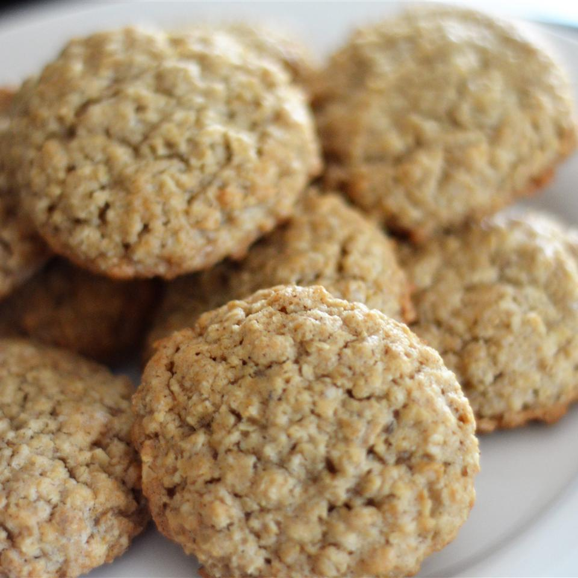

Oatmeal Cookie

Description
These oatmeal cookies are perfectly flavored and lightly spiced with just a touch of cinnamon. They're soft, chewy, and easily customizable — just add 1 cup raisins, nuts, or chocolate chips when you mix in the oats. Keep them on hand for after-school snacking or make a batch for a holiday cookie exchange.
If this oatmeal cookie recipe is not already a staple in your dessert rotation, it will be soon. These oatmeal cookies are soft, chewy, and utterly irresistible.
Ingredients
- 1.5 teaspoons ground cinnamon
- 2 cups all-purpose flour
Steps
- Whisk flour, cinnamon, baking soda, and salt together in a medium bowl until well combined.
- Beat butter, 1 cup white sugar, and brown sugar in a large bowl with an electric mixer until creamy, at least 2 to 3 minutes. Beat in eggs, one at a time, then mix in vanilla. Gradually mix in dry ingredients until well combined. Add oats and mix until thoroughly incorporated. Cover the bowl and chill dough in the refrigerator for at least 1 hour.